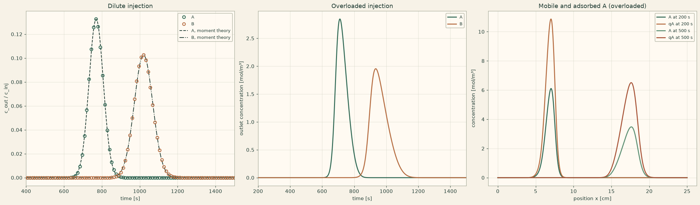

Docs › Examples › Separation in a liquid chromatography column
Reactive transport · 1D
Separation in a liquid chromatography column
Two solutes injected into a packed column adsorb on a shared stationary phase with competitive Langmuir kinetics and leave the column as separated peaks.
Run locally with OneSimulation. The example downloads are free. Running them requires an activated runtime. The current pilot runs on macOS on Apple Silicon with CPython 3.13. Installation and activation · View pilot plans. Scope of the reference checks.

What it computes
OneSimulation solves convection, axial dispersion and mass-action adsorption on free sites in one species model, with the adsorbed amounts and the free sites as immobile species, using quadratic elements and BDF2 for a dilute and an overloaded injection.
What it checks
For the dilute injection the first moments lie 0.2 and 0.35 s before the exact 770 and 1020 s, the peak widths within 0.1 % of the moment theory (402 and 425 plates against 402 and 426) and the resolution is 1.445 as predicted; 99.998 % of the injection is recovered. Overloading moves the peaks 57 and 83 s earlier.
The notebook
The complete notebook, cell by cell. Run it to produce the figures and the comparison printout.
In high-performance liquid chromatography a short pulse of a mixture is injected into a column packed with porous particles. Every solute partitions between the moving liquid and the stationary surface; the more strongly it adsorbs, the later it leaves the column. In the mobile phase the solutes \(i=\mathrm A,\mathrm B\) are carried with the interstitial velocity \(u\) and dispersed axially,
while the adsorbed amounts \(q_i\) and the free sites \(s\) (both per volume of mobile phase) do not move: \(\partial q_i/\partial t=r_i\), \(\partial s/\partial t=-r_\mathrm A-r_\mathrm B\), with the site capacity \(s_0=s+q_\mathrm A+q_\mathrm B\). At equilibrium this is the competitive Langmuir isotherm \(q_i=s_0K_ic_i/(1+K_\mathrm Ac_\mathrm A+K_\mathrm Bc_\mathrm B)\), \(K_i=k_{a,i}/k_{d,i}\).
| boundary | mobile solutes | adsorbed amounts, sites | |---|---|---| | inlet \(x=0\) | Danckwerts feed with the injection pulse \(c_\mathrm{in}(t)\) | – | | outlet \(x=L\) | convective outflow | – |
Setup. Column 25 cm long, \(u=1\) mm/s, \(D_\mathrm{ax}=2\cdot10^{-7}\) m²/s (Péclet number 1250), \(s_0=100\) mol/m³, \(K_\mathrm A=0.02\) and \(K_\mathrm B=0.03\) m³/mol, desorption rate \(k_d=2\) 1/s for both. The injection is a Gaussian pulse of 5 s standard deviation centred at 20 s.
Reference. For a dilute injection the isotherm is linear with the retention factors \(k'_i=s_0K_i\) (2 and 3), and the moments of the elution peak are exact (E. Kučera, J. Chromatogr. 19 (1965) 237; G. Guiochon et al., Fundamentals of Preparative and Nonlinear Chromatography, 2nd ed., 2006, ch. 6):
equivalent to the plate height \(H=2D_\mathrm{ax}/u+2k'u/\big(k_d(1+k')^2\big)\).
import numpy as np
from onesim.cad.d1 import Line
from onesim.meshing import StructuredLineMesher
from onesim.numerics import Numerics
from onesim.numerics.fem import FiniteElement, Lagrange
from onesim.numerics.linear import SparseDirect
from onesim.numerics.nonlinear import Newton
from onesim.numerics.time import BDF, BackwardEuler
from onesim.physics.chemistry import (
DanckwertsInflow,
ReactionIR,
SpeciesOutflow,
SpeciesTransport,
TransportSpecies,
)
from onesim.simulation import Problem, Simulation
from onesim.simulation.initial_conditions import InitialValue
from onesim.visualization import plots, theme
theme.set()Column and adsorption kinetics
The adsorption steps are mass-action reactions between a mobile solute and the immobile free sites; TransportSpecies(..., mobile=False) keeps the adsorbed amounts and the sites out of the convection.
length, velocity, dispersion = 0.25, 1.0e-3, 2.0e-7
capacity, desorption = 100.0, 2.0
equilibrium = {"A": 0.02, "B": 0.03}
centre, spread = 20.0, 5.0
retention = {name: capacity * K for name, K in equilibrium.items()}
reactions = tuple(
item
for name, K in equilibrium.items()
for item in (
ReactionIR(
f"{name} adsorbs",
{name: 1, "s": 1},
{"q" + name: 1},
{"kind": "constant", "unit": "m^3/mol/s", "value": K * desorption},
),
ReactionIR(
f"{name} desorbs",
{"q" + name: 1},
{name: 1, "s": 1},
{"kind": "constant", "unit": "1/s", "value": desorption},
),
)
)
print(
f"hold-up time L/u = {length / velocity:.0f} s, Péclet number u L / D = {velocity * length / dispersion:.0f}, "
+ ", ".join(f"k'_{name} = {k:.1f}" for name, k in retention.items())
)
line = Line(start=(0.0, 0.0, 0.0), end=(length, 0.0, 0.0))
mesh = StructuredLineMesher(cells=625).generate(line)Dilute and overloaded injection
The same column is run with a dilute injection (0.1 mol/m³ of each solute, \(K_ic\le0.003\)) and an overloaded one (20 mol/m³, \(K_ic\) up to 0.6). Quadratic elements of 0.4 mm (cell Péclet number 2) and the second-order BDF method with 1 s steps.
elution = {}
for label, injected in (("dilute", 0.1), ("overloaded", 20.0)):
model = SpeciesTransport(
domain=line.line,
velocity=(velocity, 0.0, 0.0),
reactions=reactions,
species=(
TransportSpecies("A", diffusivity=dispersion),
TransportSpecies("B", diffusivity=dispersion),
TransportSpecies("qA", diffusivity=0.0, mobile=False),
TransportSpecies("qB", diffusivity=0.0, mobile=False),
TransportSpecies("s", diffusivity=0.0, mobile=False),
),
)
problem = Problem(
name="Chromatography column",
geometry=line,
physics=(model,),
boundary_conditions=(
DanckwertsInflow(
physics=model,
boundary=line.boundaries.start,
concentration={
name: (
lambda t: injected * np.exp(-0.5 * ((t - centre) / spread) ** 2)
)
for name in equilibrium
},
),
SpeciesOutflow(physics=model, boundary=line.boundaries.end),
),
initial_conditions=tuple(
InitialValue(model.field(name), capacity if name == "s" else 0.0)
for name in ("A", "B", "qA", "qB", "s")
),
)
result = Simulation(
problem=problem,
mesh=mesh,
numerics=Numerics(
spatial=FiniteElement(element=Lagrange(order=2)),
nonlinear_solver=Newton(
linear_solver=SparseDirect(),
absolute_tolerance=1e-12,
relative_tolerance=1e-10,
),
time_integrator=BDF(order=2, startup=BackwardEuler()),
),
).run(start_time=0.0, end_time=1600.0, time_step=1.0)
outlet = np.array([[length, 0.0, 0.0]])
elution[label] = {
name: result.field(model.field(name)).time_series(outlet)
for name in equilibrium
}
elution[label]["profiles"] = {
name: result.field(model.field(name)) for name in ("A", "qA")
}Comparison with the moment theory
Zeroth, first and second moments of the dilute elution peaks against the exact values, and the resolution \(R_s=(\mu_{1,\mathrm B}-\mu_{1,\mathrm A})/\big(2(\sigma_\mathrm A+\sigma_\mathrm B)\big)\).
injected_amount = 0.1 * spread * np.sqrt(2 * np.pi)
theory = {
name: (
centre + length / velocity * (1 + k),
np.sqrt(
spread**2
+ 2 * dispersion * length / velocity**3 * (1 + k) ** 2
+ 2 * length * k / (velocity * desorption)
),
length
/ (2 * dispersion / velocity + 2 * k * velocity / (desorption * (1 + k) ** 2)),
)
for name, k in retention.items()
}
print(
f"{'solute':>6s} {'recovered':>10s} {'mu1 [s]':>9s} {'theory':>9s} {'sigma [s]':>10s} {'theory':>9s} {'plates N':>9s} {'theory':>9s}"
)
moments = {}
for name in retention:
t, c = elution["dilute"][name]
zeroth = np.trapezoid(c, t)
first = np.trapezoid(t * c, t) / zeroth
sigma = np.sqrt(np.trapezoid((t - first) ** 2 * c, t) / zeroth)
moments[name] = (first, sigma)
print(
f"{name:>6s} {zeroth / injected_amount:10.5f} {first:9.2f} {theory[name][0]:9.2f} {sigma:10.3f} {theory[name][1]:9.3f} "
f"{(first - centre) ** 2 / (sigma**2 - spread**2):9.1f} {theory[name][2]:9.1f}"
)
print(
f"resolution R_s = {(moments['B'][0] - moments['A'][0]) / (2 * (moments['A'][1] + moments['B'][1])):.3f} "
f"(theory {(theory['B'][0] - theory['A'][0]) / (2 * (theory['A'][1] + theory['B'][1])):.3f})"
)
for name in equilibrium:
t, c = elution["overloaded"][name]
print(
f"overloaded {name}: peak at {t[np.argmax(c)]:.0f} s (dilute {elution['dilute'][name][0][np.argmax(elution['dilute'][name][1])]:.0f} s), "
f"recovered {np.trapezoid(c, t) / (200 * injected_amount):.4f} of the injection"
)Figure
Elution profiles of the dilute injection (normalised to the injected amount) with the Gaussian of the moment theory, the overloaded injection with its sharp fronts and tails, and the mobile and adsorbed amount of A along the column during the overloaded run.
t = elution["dilute"]["A"][0]
fig = plots.figure(1, 3, size=(19, 5.5))
plots.line(
points={
name: (t[::12], elution["dilute"][name][1][::12] / 0.1) for name in equilibrium
},
reference={
f"{name}, moment theory": (
t,
spread
/ theory[name][1]
* np.exp(-0.5 * ((t - theory[name][0]) / theory[name][1]) ** 2),
)
for name in equilibrium
},
xlimits=(400, 1500),
xlabel="time [s]",
ylabel="c_out / c_inj",
title="Dilute injection",
legend="upper right",
ax=fig[0],
)
plots.line(
y={
name: (elution["overloaded"][name][0], elution["overloaded"][name][1])
for name in equilibrium
},
xlimits=(200, 1500),
xlabel="time [s]",
ylabel="outlet concentration [mol/m³]",
title="Overloaded injection",
legend="upper right",
ax=fig[1],
)
x = np.linspace(0.0, length, 801)
plots.line(
y={
f"{name} at {time:.0f} s": (
x * 100,
elution["overloaded"]["profiles"][name].evaluate(
np.column_stack((x, 0 * x, 0 * x)), time=time
),
)
for time in (200.0, 500.0)
for name in ("A", "qA")
},
xlabel="position x [cm]",
ylabel="concentration [mol/m³]",
title="Mobile and adsorbed A (overloaded)",
legend="upper right",
ax=fig[2],
)
plots.show()Going further
Raise the desorption rate: the kinetic share of the plate height vanishes and the peaks approach the dispersion limit. A gradient of the mobile-phase strength enters through a time-dependent adsorption coefficient; a third solute is one more pair of reactions.